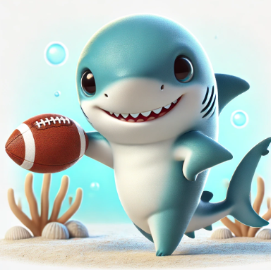
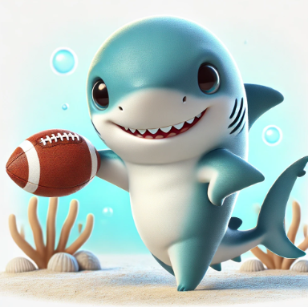

The Snakes are the Team to Beat
After defeating the killers by a 56.52 margin the Snakes hold a two game lead over the rest of the teams, thanks to a Shraks lost against Perry's Perfect team.
Mighty Mikes Stay Mighty
The Mikes held on to a narrow win against Nathan's Niffty team keeping themselves in the middle of the standings but there true test will come next week against the Gorillas and two weeks later against the Snakes.
Competitive Gorillas
After beating Karl with a Snarl, the Gorillas demonstrate legitimate contention, now sharing 2nd place with the Sharks.
Perry's Perfect Team saved by Mondays Jets vs Bills Game
After being down a few points at the end of Sundays games the Perfect Perry's needed Jets WR Garret Wilson to ball out and he did putting up 24.7 points. Perry's Perfect Team remains in the middle of the stnadings.
Bear Necessities vs Ugly Ass Mules
This was a must in for the Bears and they pulled it off against the Mules, sharing the middle of the standings with the Mike's, Snarls, and Perfect Perrys.